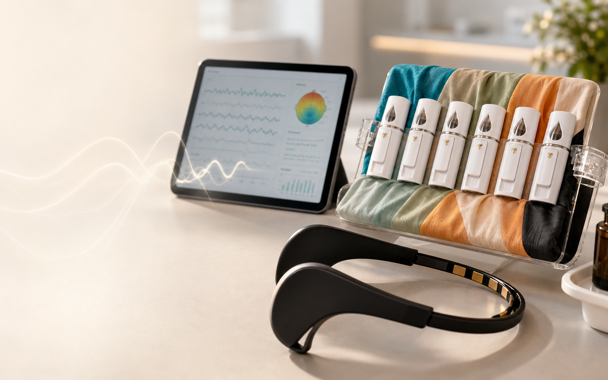
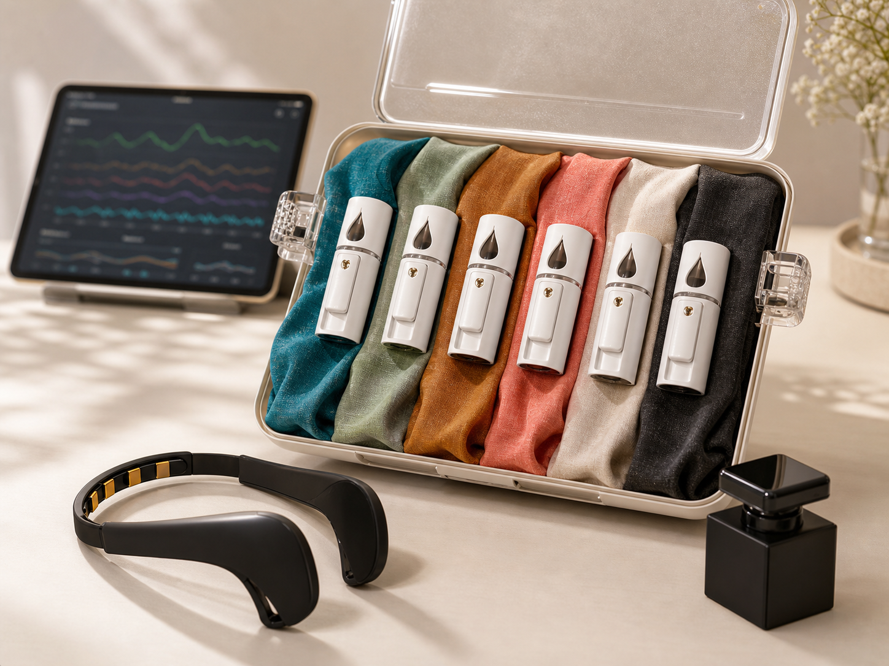

連接 Muse
透過 LibMuse BLE 橋接 Muse 2 或 Muse S，也保留 OSC 模式支援既有串流流程。

Orion 讓受測者保持平靜，同時保留可重複、可追蹤、可分析的研究資料結構。
透過 LibMuse BLE 橋接 Muse 2 或 Muse S，也保留 OSC 模式支援既有串流流程。
受測者依照語音與畫面完成準備、嗅聞與休息階段，建立穩定的測試節奏。
嵌入式 Python 服務擷取頻帶功率，與 Trial 0 基準比較後即時計算 SRI/ARI。
完成的 session 透過 API Key 驗證後上傳至 FastAPI 與 PostgreSQL，保存長期研究資料。
SRI 以 Alpha/Theta 放鬆頻帶相對於 Beta 警覺頻帶的變化為核心，並將每個香氣試驗與受測者自己的無香氣基準比較。

為研究團隊、診所與身心健康實驗室打造的完整產品流程，用可量測的腦波指標觀察香氣如何改變身心狀態。
與我們討論如何導入 Orion，建立 EEG 引導的嗅覺測試、受測者流程與雲端研究紀錄。